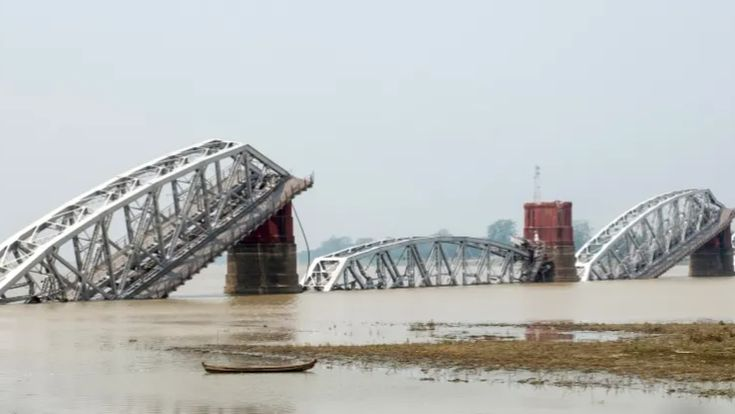

Earthquake in Myanmar
Occurred on 28 March 2025 at 12:50:52 MMT, a devastating
magnitude 7.7~7.9 strike-slip earthquake along the Sagaing Fault
near Mandalay - the largest shallow quake in Myanmar in over a century -
caused massive rupture, widespread destruction, thousands of casualties,
and unprecedented geological observations that reshape seismic hazard
understanding globally. A 6.7 magnitude aftershock struck about 11
minutes later, ~32km south of the main event.
Key Facts About the Earthquake
- Date: March 28, 2025
- Time: 12:50:52 MMT (Myanmar Standard Time)
- Magnitude: 7.7-7.9
- Epicenter: Near Mandalay, along Sagaing Fault
- Depth: Shallow (typical for strike-slip earthquakes)
- Type: Strike-slip along Sagaing Fault
- Fault Length: Significant rupture along fault line
Aftershock Information
- Magnitude: 6.7
- Time: Approximately 11 minutes after main shock
- Location: ~32km south of main epicenter
- Impact: Additional damage to already weakened structures
- Sequence: Part of complex seismic sequence
Impact and Damage
- Widespread destruction in Mandalay region
- Thousands of casualties reported
- Significant damage to infrastructure and buildings
- Major impact on historical and cultural sites
- Disruption to transportation and communication networks
- Large-scale humanitarian response required
Geological Significance
- Largest shallow earthquake in Myanmar in over a century
- Highlighted vulnerability of urban areas to major seismic events
- Provided unprecedented observations of Sagaing Fault behavior
- Reshaped understanding of seismic hazards in the region
- Important case study for strike-slip earthquakes globally